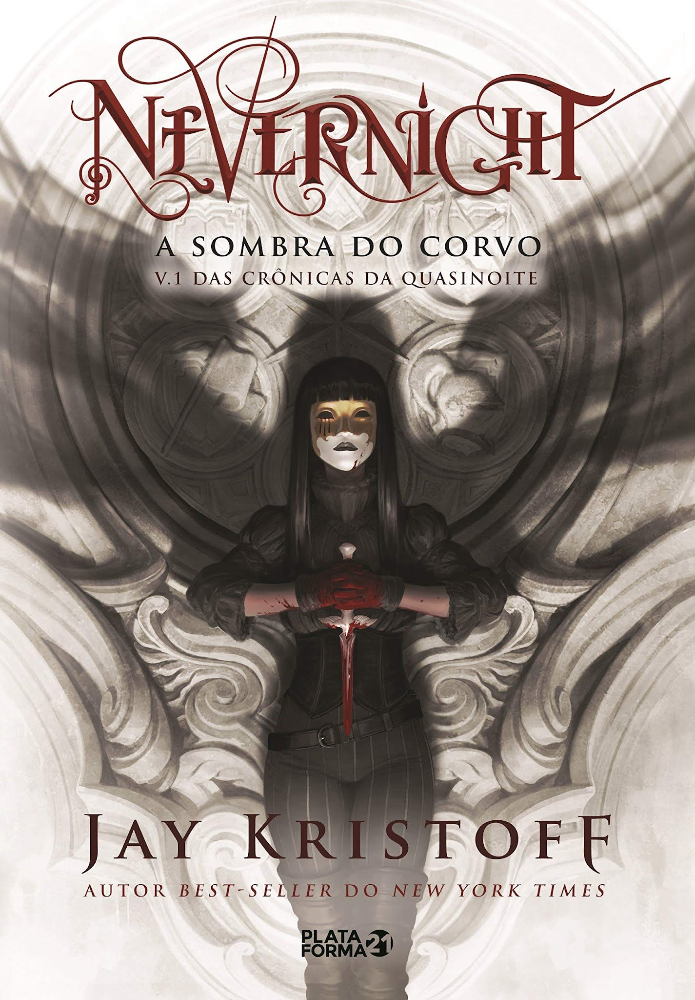
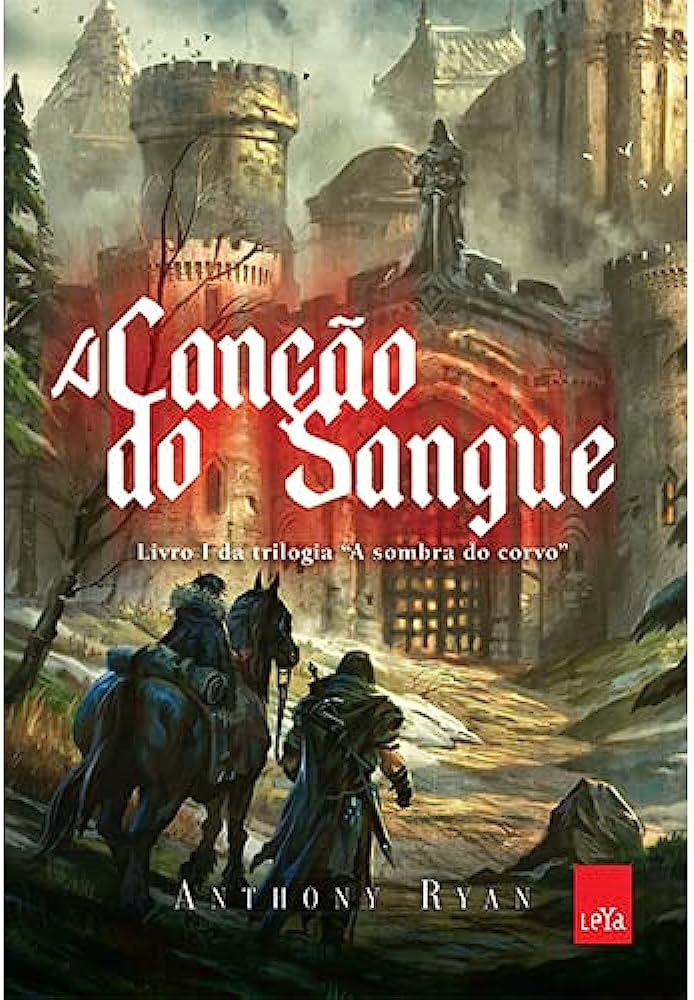
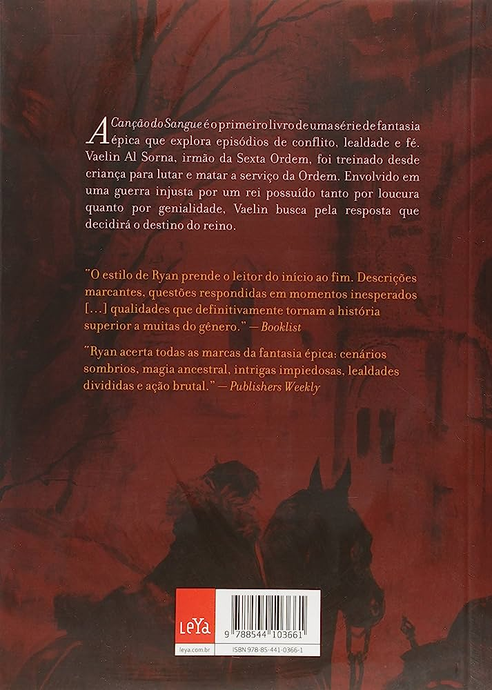

O autor do livro é o personagem principal da história, que assume também o papel de narrador, contando sobre o fatídico dia em que o seu avião teria caído no meio do deserto do Saara.
Lá, o personagem principal adormece e, ao acordar, se depara com o Pequeno Príncipe, que pede para que ele desenhe um cordeiro numa folha de papel.
O protagonista é frustrado em relação aos seus desenhos, pois nunca ninguém conseguia interpretar as suas artes da forma correta.
Ao longo da história, o Pequeno Príncipe vai narrando as suas aventuras para o protagonista.
O jovem estaria a procura de um carneiro para comer as árvores que estariam crescendo em excesso em sua terra, um asteroide conhecido por B 612, que teria apenas uma rosa vermelha e três vulcões, sendo um deles inativo.

